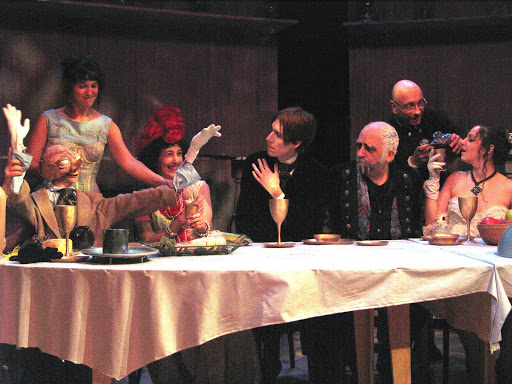
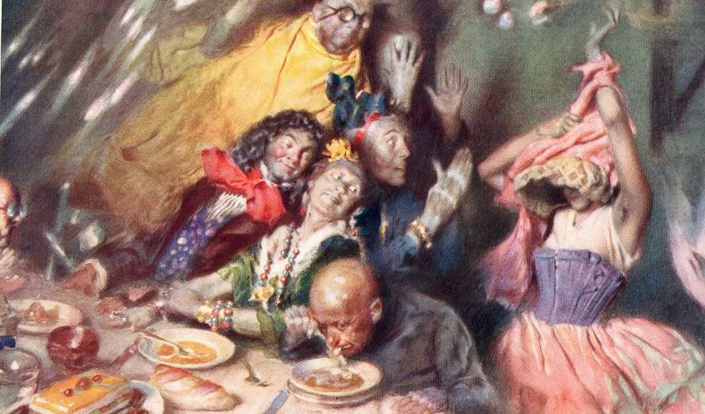

|  |  |
El sistema del Dr. Tarr y el Profesor Fether pertenece a la serie de relatos grotescos de Poe, presenta ciertos rasgos singulares. Admite la etiqueta de “cuentos de tesis”, es decir, que hacen pensar que su autor intercaló en los mismos convicciones u opiniones personales sobre cuestiones más o menos extraliterarias; se encuentra ambientado en Francia y protagonizado por dos pobres incautos.
Dos jóvenes caballeros van de viaje por el sur francés. Llegan a las cercanías de un manicomio privado, que suscita la curiosidad de uno de ellos. Su acompañante, que conoce al director de la institución, se aviene a presentarle, y al punto, a consecuencia de su fobia a los lunáticos, se despide. El joven es invitado a entrar por el director, que le informa cumplidamente de todo lo que quiere saber, pero pronto se ve sorprendido por la conducta de unos y otros. Al final, durante el transcurso de la cena, tienen lugar extraordinarios acontecimientos.
"... En conjunto, pues, no pude dejar de pensar que había mucho de raro en cada cosa que allí se me ofrecía… Pero el mundo está formado por toda clase de gentes con toda clase de costumbres convencionales. Demasiado había viajado para no ser un perfecto adepto del nil admirari; por lo cual me senté con toda compostura a la diestra de mi huésped y, como estaba dotado de un sólido apetito, hice los honores a las excelentes viandas que me presentaron.
La conversación, entretanto, era muy animada. Como de costumbre, las damas hablaban mucho. Pronto noté que casi todos los presentes eran personas muy bien educadas, y en cuanto a mi huésped, resultaba una fuente inagotable de anécdotas divertidas. Se mostraba muy inclinado a hablar de sus funciones de director de la maison de santé y, para mi gran sorpresa, advertí que el tema de la locura era el favorito de todos los presentes. Se contaban historias muy graciosas sobre los caprichos de los pacientes...leer más"